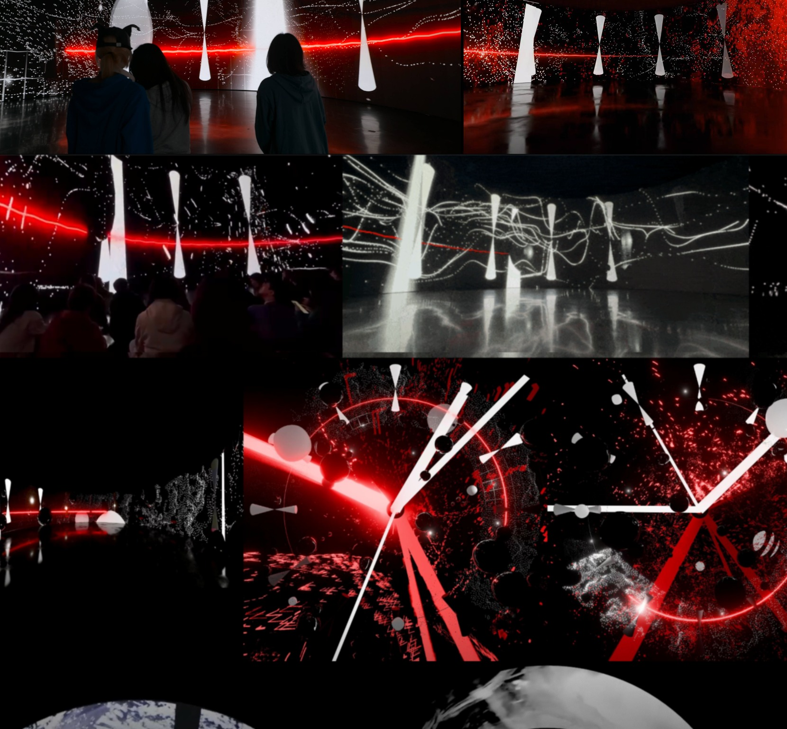
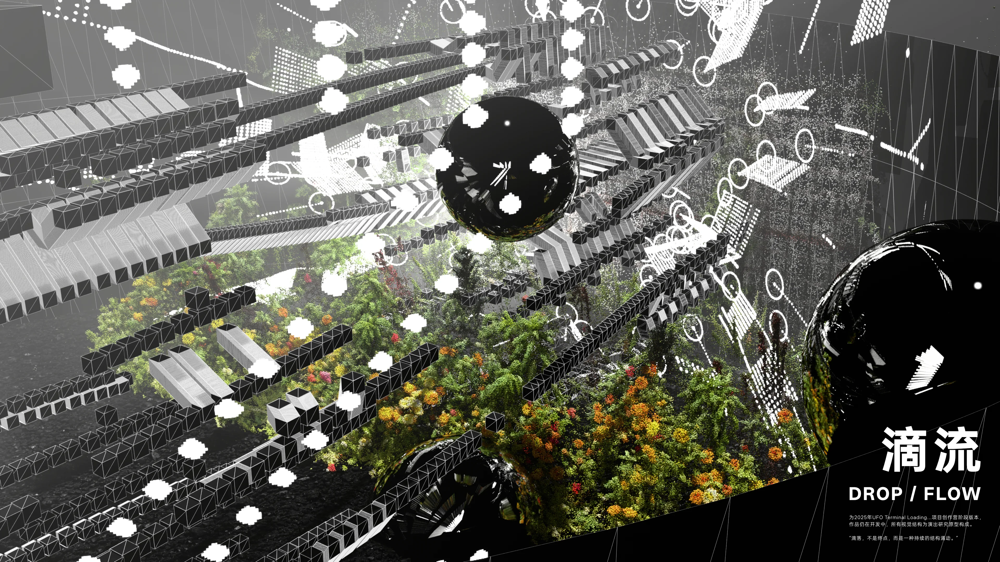
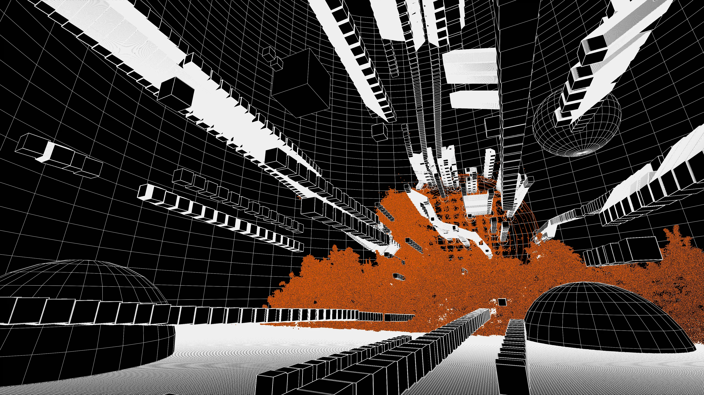

《控时者 / TIMER》与《滴流 / DROP FLOW》组成持续演化的环幕音画系列。作品围绕 15K 全景画布、音乐结构与现场观看关系展开，每次演出在同一套实时视觉系统中重新编排内容、节奏和现场控制。TIMER and DROP FLOW form an evolving panoramic audiovisual series. Developed for a 15K circular canvas, each performance reworks content, pacing and live control within the same maintained realtime visual system, responding to the music and the audience’s position in the space.
红、黑、白构成环幕中的时间刻度、粒子轨迹与现场观看关系。Red, black and white form a panoramic system of temporal markers, particle trajectories and audience sightlines.

现场成片与空间预演并置，呈现作品如何从结构测试迁移到全景环幕。Installed footage and spatial previsualisation show how the work moves from structural studies into a panoramic screen environment.




一套系统，支持多次演出。A system designed for repeat performances.
系统从环幕分辨率、接缝位置、观看距离和画面安全区开始建立。实时视觉模块、音频分析和手动控制共同完成演出调度，每次可依据音乐结构、合作艺术家和现场时长调整内容，同时保持输出稳定。The system is built around panoramic resolution, screen seams, viewing distance and safe areas. Realtime visual modules, audio analysis and manual control work together during the show, allowing content to be adjusted to each artist, musical structure and running time while maintaining stable output.
- 系列Series
- 控时者 / TIMER · 滴流 / DROP FLOWTIMER · DROP FLOW
- 创作支持Supported by
- UFO Terminal Loading Project / UFO 终端加载计划UFO Terminal Loading Project
- 形式Format
- 15K 全景环幕 / 实时音画演出15K panoramic display / realtime audiovisual performance
- VIRTURA 职责VIRTURA Role
- 实时视觉系统、环幕内容编排、空间预演、音频响应与现场视觉制作Realtime visual systems, panoramic content direction, spatial previsualisation, audio response and live visual production